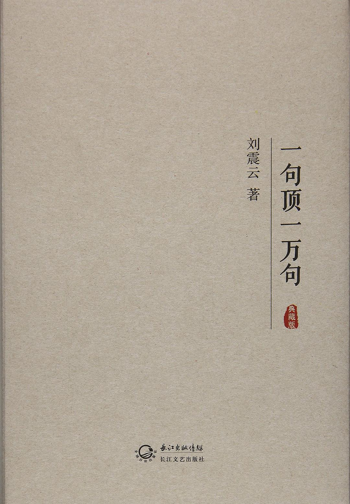
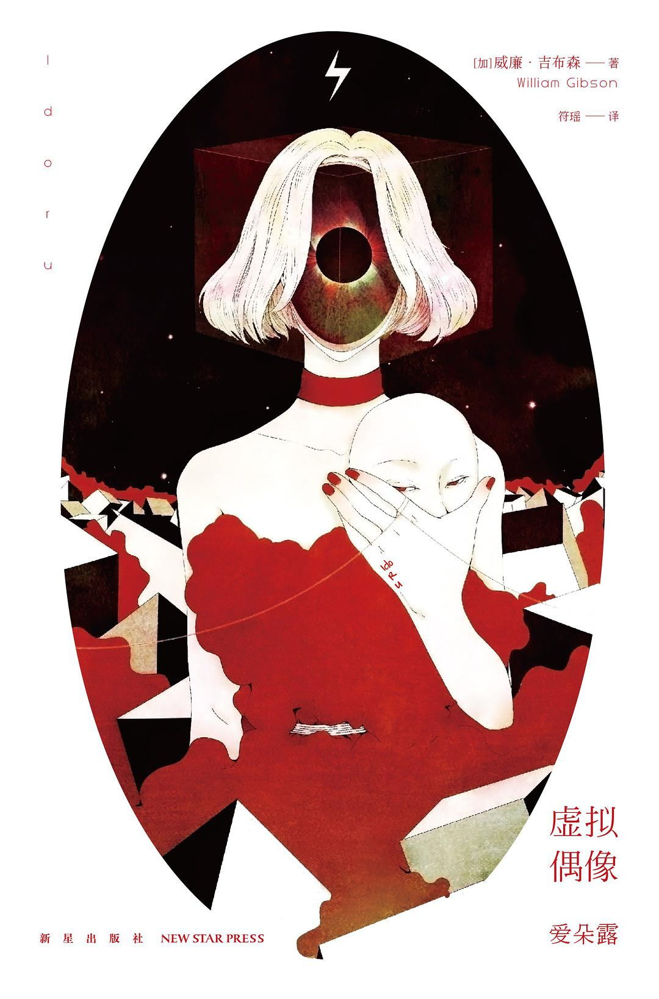
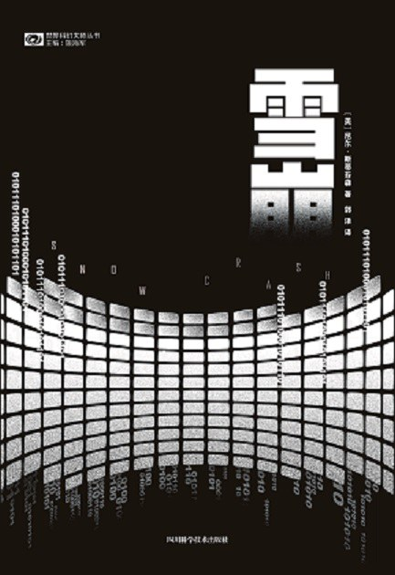
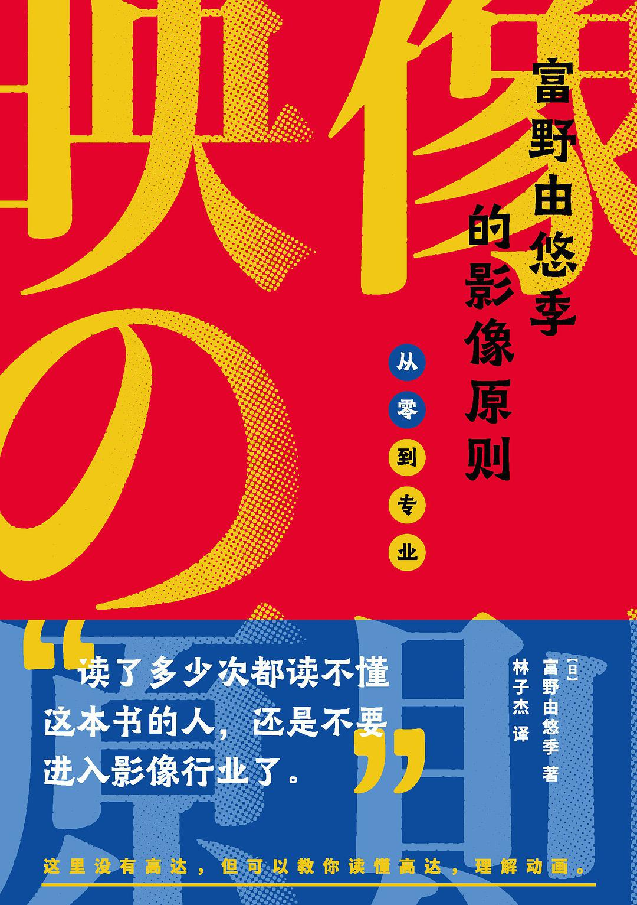
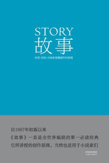

2021年书单目录
| 封面 | 进度 | |
|---|---|---|
|  | 《一句顶一万句》 作者：刘震云 出版社：长江文艺出版社 https://book.douban.com/subject/26877012/ |
- |
|  | 《虚拟偶像爱朵露》 作者：[美] 威廉·吉布森 出版社：新星出版社 https://book.douban.com/subject/25725500/ |
- |
|  | 《雪崩》 作者：[美] 尼尔·斯蒂芬森 出版社：四川科学技术出版社 https://book.douban.com/subject/27097409/ |
- |
|  | 《富野由悠季的影像原则》 作者： [日] 富野由悠季 出版社：浙江大学出版社 https://book.douban.com/subject/35349490/ |
第四章读完， 共十二章 |
|  | 《故事》 作者：[美] 罗伯特·麦基 出版社: 天津人民出版社 https://book.douban.com/subject/25976544/ |
第一章在读 |
本文标题：2021年书单目录
文章作者：ZHANG Xiangyun
发布时间：2021-08-24
最后更新：2021-08-26
原始链接：https://xiangyun-zhang.github.io/2021-59df9e5f512b/
版权声明：本博客所有文章除特别声明外，均采用 CC BY-NC-SA 3.0 CN 许可协议。转载请注明出处！